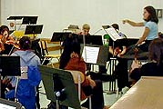

Research and Studies
Undermining Professionalism |
Undermining Professionalism

Racing to the Finish Line: Reflections on a Regents-Preparatory Classroom
The current controversy over censorship has focused on specific references to text. But there is also the censorship of ideas produced by tests which completely control curriculum.
Recently, a veteran teacher I met at Regents training conference gave me the following advice: "Honey, spend two days covering the Byzantine Empire, three days on Islam and then you gotta move on." In New York City, the Regents exams have arrived and the race has begun.
There has been much discussion about the merit of standardized tests, especially for traditionally underachieving students. While policy-makers, business leaders, and government officials have all weighed in on the issue, there has been one crucial voice absent from the debate: that of the classroom teacher. It is teachers who, when they close the door to their classrooms, will inevitably have to implement such reforms.
Most teachers, as educators, are in favor of rigorous standards and assessments. We assess our students every day by using the Socratic method, essays, and tests. The problem, however, does not lie with the concept of a standardized assessment, but rather with the ill-conceived tests that have drastic consequences for the curriculum. In the race to the test, teachers attempt to "cover" vast amounts of material in a short amount of time, confusing false finish lines with true mastery of a subject. When racing, there is no time to analyze, defend, refute, explain the significance of, or evaluate---all components of excellence in teaching and learning. The result is mediocrity and an approach to instruction that is mind-numbing, rote, and dangerously over-simplified.
A prime example of the race to mediocrity is the New York State Regents Global Studies curriculum, a two- year sequence that requires teachers to teach world history from the emergence of the first Homo sapiens to the present--in every culture, country, and society. The curriculum's organization is chronological, ignoring the variegating pace of development in different parts of the world. For example, one week the curriculum calls for students to discuss the 14th century in Europe, on the second week students learn about Bantu migrations in Africa, while on the third week the students study the early societies of Mesoamerica. It is no wonder that most students react to such frenzy and chaos by tuning out, and join the myriad of Americans who are woefully ignorant of basic geography and history.
This rapid pace of the Regents curriculum does not allow for teacher creativity and flexibility in response to student interest. As a result of September 11th, students are thirsting for knowledge about Islam and the Middle East, yet the curriculum, and the test, remains fixed in space and time. Oversimplified teaching--"covering Islam" in three days-- leads directly to a stereotypical understanding of culture, hardly anyone's educational objective. Yet it was such a stereotypical understanding of Islam that caused so much of the backlash against Arab-Americans in the wake of September 11th. Especially this year, Global Studies teachers in New York have a responsibility to allot extra time to discussions of current events. In the tunnel vision of the race, however, such weighing and judging of relevance and inserting and deleting of materials have been lost among teachers, who subsequently fail to teach these same analytic skills to their students. Teachers, pressured to complete the curriculum "on time," become robotic and unthinking.
Thus, the end goal, the Regents test itself, has become the starting point. Curricula and learning are only byproducts of test preparation. It is no surprise to anyone who has spent significant time in the classroom that such a piecemeal curriculum does not lead to deep comprehension - nor does it lead to the type of comprehension needed to answer even simple questions. Despite the generous curve, many New York City schools receive dismally low Regents scores. As a result, administrators waste even more instructional time on test preparation. Perhaps the opposite policy would be more effective. If students spent their days engaged in meaningful, integrated learning, maybe they would demonstrate more facility when tested. Or perhaps the Regents should reconfigure the exams to test for critical thinking rather than for the rote memorization of facts and vague, clichéd essay questions.
In many Regents-prep schools, teachers go from being valued, specialized scholars to easily replaceable, take-out workers of knowledge. Because of the breadth of the courses, teachers do not have to understand any one topic on an in-depth level. As a result, creative and questioning teachers who like to teach their material with complexity leave the system, often for suburban or alternative schools that nurture more critical teaching. Teachers who follow the prescribed curriculum, who get to the finish line, stay within the system.
The consequences of the race to mediocrity are grave. Students in Regents preparatory schools often hate learning, and rule out the pursuit of academics in the future. Students who do go on to institutions of higher learning are ill prepared for the complex analysis required in most colleges and universities. Perhaps the most insidious outcome of the race, therefore, is that the students - most often the urban and underprivileged -are discarded along the wayside and prevented from reaching the real finish line: academic and economic success in American society.
The author is a social studies teacher in New York City.
|  | ||||

|
||||